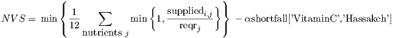
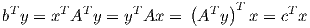

Sensitivity Analysis for Case Study:
World Food Program
Students may work in groups of up to three people. You can change groups from Part 1 if you want. You
may consult your textbooks, your notes, online information, the TA, and me. You may not solicit help
from other sources.
Due: Tuesday November 16, 2021. (30 points. Questions 1–2 are worth 3 points each; Questions
3–8 are worth 4 points each.)
1 Introduction
The solution found in Part 1 depends on the precise values of various parameters. Use sensitivity analysis
to answer the following questions. Include printouts of relevant parts of your AMPL output. Assume that
each part is independent of the others. Procedures for obtaining shadow prices and other relevant
information are given below.
If you prefer to use them, my model file is available on LMS and the course website. The solution to
the LP relaxation has value 0.9547767264. If your model returns a different value or the first 6 significant
digits, or if your model is nonlinear, you need to either modify your model so it does give this value, or use
my model.
Notes: (1) You may want to solve a modified problem to check your answer for Questions 1–4, or to try
to determine where to look for sensitivity information. That is OK, but I don’t want to see those results!
You must give me the information using only sensitivity analysis. (2) AMPL might give a dual variable or
reduced cost of the opposite sign from what you expect. That’s OK, you can just use the sign you’d
expect.
2 Questions
- If the amount World Food Program is willing to spend per day increases to $29,000,
estimate the change in objective function value.
- Use sensitivity analysis to estimate the change in the objective function value if the value of
capmarket[’Dara’,’Milk’] is increased to 2.1. What about if we increased the parameter
capmarket[’Dara’,’Oil’] to 2.1?
- In the current solution, Vitamin C consumption is at its lower bound in Hassakeh. One way to try
to encourage the consumption of Vitamin C in Hassakeh would be to modify the objective function
to maximize

From looking at reduced costs, determine how large α has to be to encourage the consumption of
Vitamin C in Hassakeh.
(Note: If you use a constraint to limit the shortfall instead of explicitly defining a variable, then you
should be able to use the dual variable for that constraint. You may need to scale the dual variable,
depending on the exact structure.)
- How far must the cost of milk at the SOURCES decrease before it becomes attractive to buy it?
(Hint: You are considering a change in an entry in the constraint matrix, so you have to
look at both shadow prices and reduced costs. You may find it helpful to consider the
identity

which is satisfied by optimal solutions to the standard primal-dual pair. Recall also that the reduced
costs are equal to the dual slacks.)
- Use the command let costUB:=29000; and solve. Is the change in objective function value larger
or smaller than your prediction in Question 1? Why? How does the optimal value change
if you use let costUB:=28100;, compared to 10% of your prediction in Question 1?
Why?
- Use the command let capmarket[’Dara’,’Milk’]=2.1; and solve. Is the change in objective
function value larger or smaller than your prediction in Question 2? Why?
Now use the command let capmarket[’Dara’,’Milk’]:=3; and solve. Is the change in objective
function value larger or smaller than 10 times your predicted change in Question 2?
Why?
- Modify purchasecost[’Milk’] to confirm your answer to Question 4. You should choose 2 values
of the parameter that are within 1% of each other, one for which Milk is purchased, and one for
which it is not.
- Modify the objective function in the model file to confirm your answer to Question 3. You should
choose 2 values of the parameter that are within 1% of each other, one for which the shortfall of
VitaminC is 25% and one for which it is less.
3 AMPL notes
- To find the value of a dual variable corresponding to a constraint called fabcap, type
To find the slack in the constraint, type
- To find the reduced cost of a variable called SELL in the optimal tableau, type
- If you are working in a Windows operating system, you can edit your model and data files in Office,
for example. Save the files as plain text files. Windows may append the suffix txt to the file
names, in which case you would need to include that suffix when asking ampl to read the
file.
- If you want to read in a new model file chips.mod and data file chips.dat, you can use the reset
command:
ampl: reset;
ampl: model chips.mod;
ampl: data chips.dat;
- If you want to reset the whole data file and read in a new data file chips.dat, but you want to keep
the model file as before, you can type
ampl: reset data;
ampl: data chips.dat;
- If you want to change one parameter, you can use the let command as follows:
(OS) ampl
ampl: model sample/steel.mod;
ampl: data sample/steel.dat;
ampl: solve;
MINOS 5.4: optimal solution found.
2 iterations, objective 192000
ampl: let rate["bands"]:=250;
ampl: solve;
MINOS 5.4: optimal solution found.
1 iterations, objective 217200
This changes the rate for bands and then resolves the problem.
- One way to find bounds on parameters in AMPL is to use the cplex option of sensitivity. This will
let you find ranges in which parameters can be changed without the set of optimal basic variables
changing. First make sure CPLEX is the solver:
ampl: option solver cplex;
Once you’ve established cplex as the solver, enter the following command:
ampl: option cplex_options ’sensitivity’;
Solve the problem again, and then you can then use the suffixes up and down on variable names, as
described for reduced costs and slacks. For variables, this should give you a range within
which the objective function coefficient can be changed without changing the optimal
solution.
- Two useful commands to suppress the displaying of zero-valued variables are:
ampl: option omit_zero_rows 1;
and
ampl: option display_1col 10000;
The first command suppresses the zeroes, except in a matrix. The second command prevents the
display of output in matrices (unless the row of the matrix would have at least 10000
entries).
- All the variables and their reduced costs can be displayed simultaneously by using the
command
display {j in 1.._nvars} (_varname[j],_var[j],_var[j].rc);
(See page 249 of the AMPL text.)
All the constraints and their shadow prices can be displayed simultaneously by using the
command
display {j in 1.._ncons} (_conname[j],_con[j]);
(Again, see page 249 of the AMPL text.)
These commands can be used with the other suffixes available when using the cplex sensitivity
option.
- You can use sum and other AMPL commands after solving the problem to find values of various
combinations of the primal and dual variables and the parameters. For example, you can display the
total value of a variable hydrorelease[h,t] over all time periods t from 1 to horizon at a particular
reservoir A using the command:
ampl: display sum{t in 1..horizon} hydrorelease[’A’,t];
- More hints are available online from my page about AMPL:
- This project is available from LMS and also from the course webpage, at
where you will also find more information about AMPL.